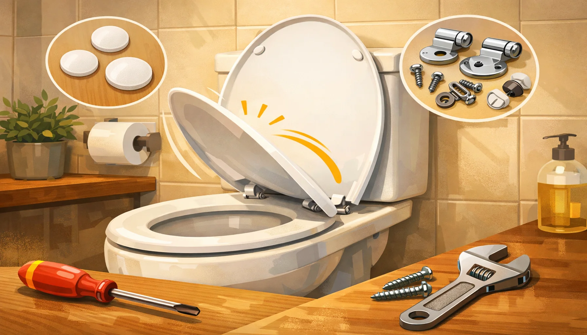

Toilet Seat Won't Stay Up? 5 Easy Fixes That Actually Work

Product Researcher & Bathroom Comfort Specialist
This article contains affiliate links. If you purchase through these links, we may earn a small commission at no extra cost to you. Full disclosure.
Why Won't My Toilet Seat Stay Up?
The most common cause is loose mounting bolts that let the seat shift forward, changing its center of gravity so the lid falls. Other causes include worn hinges, a gap between the tank and bowl (no backstop), or a seat shape that does not match your toilet. Most fixes take under 10 minutes with no tools or a basic screwdriver.

Few things are more annoying than a toilet seat that slams down every time you lift it. It startles everyone in the house, it damages the seat and bowl over time, and it turns a basic bathroom trip into a balancing act. The good news: this is almost always fixable without a plumber, and usually without spending a dime.
In this guide, we walk through the five most common causes of a falling toilet seat and the exact fix for each one. We start with the simplest solutions (realignment and tightening) and work up to full replacement only if nothing else works. Most people solve the problem with Fix #1 or #2.
If your seat is not just falling but also wobbling, cracking, or otherwise damaged, it may be time for a full toilet seat replacement instead. And if you are not sure whether you have the right seat shape, check our elongated vs round toilet seat comparison first.

KOHLER Cachet ReadyLatch
ReadyLatch hinges grip the bowl firmly with no tools needed. Quiet-Close lid, solid polypropylene build. The hinge design virtually eliminates the falling-seat problem.
Check Price on Amazon


Why Your Toilet Seat Keeps Falling Down
A toilet seat stays up because of a simple balance of forces. When you lift the lid past its tipping point, gravity keeps it leaning against the tank. When that balance is disrupted, the lid falls forward. Here are the four mechanical reasons this happens:
1. Loose Mounting Bolts
This is the number-one cause. The two bolts that attach the seat to the bowl loosen over time from daily use. When they loosen, the entire seat assembly slides forward by even a fraction of an inch. That tiny shift moves the lid's center of gravity past its tipping point, and it falls.
You can test this instantly: grab the seat with both hands and try to slide it forward and backward. If it moves at all, your bolts are loose.
2. Worn or Damaged Hinges
Plastic hinges develop play after years of opening and closing. Metal hinges can corrode in humid bathrooms. In either case, the extra looseness lets the lid wobble past the tipping point. If your seat moves side to side as well as falling forward, the hinges are the culprit.
3. No Backstop (Tank-Bowl Gap)
On most toilets, the raised lid rests against the front of the tank. But some toilet designs have a significant gap between the tank and the bowl. Wall-mounted toilets, one-piece low-profile designs, and some European models leave the lid with nothing to lean on. Without that backstop, the lid has to balance perfectly upright, and any vibration or air movement tips it forward.
4. Wrong Seat Shape
An elongated seat on a round bowl (or the reverse) changes the weight distribution. The overhang at the front acts as a lever that pulls the lid forward. This is more common than people realize, especially after moving into a new home where the previous owner installed the wrong type.
Fix #1: Realign and Tighten the Mounting Bolts
Difficulty: Easy • Time: 5 minutes • Cost: $0
This fix solves the problem for roughly 60% of people. It requires nothing more than a screwdriver and possibly a pair of pliers.
1 Open the bolt covers
Locate the two plastic covers at the back of the seat where it attaches to the bowl. Flip them open to expose the mounting bolts underneath. Some designs use snap-off covers; pry them gently with a flathead screwdriver.
2 Reposition the seat
Loosen both bolts just enough to slide the seat. Push the entire seat assembly as far back as it will go, so the hinges are at the very back edge of the bolt slots. This maximizes the backstop angle when the lid is raised.
3 Tighten evenly
Hold each bolt from the top with a screwdriver while tightening the nut underneath with pliers or a wrench. Alternate between bolts, tightening each a half-turn at a time. The seat should be firm but not cranked down so hard that you crack the porcelain.
4 Test
Raise the lid fully. It should rest against the tank (or stay upright if there is no tank contact). Try nudging it gently. If it stays, you are done. If it still falls, move to Fix #2.
Fix #2: Add Adhesive Bumper Pads
Difficulty: Easy • Time: 5 minutes • Cost: $3-8
If tightening the bolts did not fully solve the problem, adhesive bumper pads give the lid a surface to grip when raised. This is especially effective for toilets with a small tank-to-bowl gap or a curved tank front where the lid cannot rest flat.
1 Clean the contact surface
Wipe the front face of the tank (where the lid touches when raised) with rubbing alcohol or a bathroom cleaner. Let it dry completely. The adhesive bonds best to a clean, dry, oil-free surface.
2 Position the bumpers
Raise the lid and note exactly where it contacts (or almost contacts) the tank. Apply two bumper pads at those contact points. Use pads that are at least 1/2 inch thick; thinner pads may not provide enough friction.
3 Press firmly and wait
Press each pad firmly for 30 seconds to activate the adhesive. Wait 10 minutes before testing. The adhesive needs time to cure, especially in humid bathrooms.
Self-adhesive silicone or rubber bumper pads are available at any hardware store. Look for pads marketed for cabinet doors or furniture; they work identically and cost less than toilet-specific products. Make sure they are rated for moisture resistance.
Fix #3: Replace Worn Hinges
Difficulty: Moderate • Time: 15-20 minutes • Cost: $8-20
If the seat feels loose even with fully tightened bolts, the hinges themselves may be worn out. Plastic hinges develop internal play over time, and metal hinges can corrode and lose their grip. Replacing just the hinges saves you the cost of a full new seat.
How to Check If Hinges Are the Problem
With the bolts fully tight, try to rock the seat side to side. A properly functioning seat should have zero lateral movement. If you feel any wiggle, the hinges have worn beyond their design tolerance.
Replacement Options
- OEM hinges: Order directly from the seat manufacturer. Check the model number on the underside of the seat or inside the bolt cover area. This guarantees a perfect fit.
- Universal hinge kits: Available at hardware stores for $8-15. These work with most standard seats but may not fit specialty or soft-close models.
- Upgraded metal hinges: If your current seat has plastic hinges, upgrading to stainless steel or zinc-alloy hinges adds years of life and significantly reduces play.
Installation Steps
- Remove the old bolts and lift the seat off the bowl
- Detach the old hinges from the seat (usually held by pins or screws)
- Attach the new hinges to the seat
- Place the seat back on the bowl and insert the new bolts
- Tighten evenly and test
For detailed removal and installation instructions, see our how to replace a toilet seat guide.
Fix #4: Bridge the Tank-Bowl Gap
Difficulty: Easy • Time: 5 minutes • Cost: $5-15
Some toilets, especially one-piece and wall-mounted designs, have a gap between the tank and the bowl that leaves the lid with no backstop. This is a design issue, not a defect, and it requires a physical solution.
Solution A: Adhesive Foam Backstop
Apply a strip of high-density adhesive foam (1 inch thick, available at hardware stores) to the front face of the tank. This creates an artificial backstop for the lid. Choose closed-cell foam, which resists moisture and does not compress over time.
Solution B: Tank Lid Cushion
Several companies sell silicone or rubber cushions designed specifically for this purpose. They attach to the tank with adhesive or suction cups and provide a soft, stable surface for the lid to rest against. These range from $5-15 and last several years.
Solution C: Adjust the Seat Position
If the bolt slots allow it, slide the seat as far back as possible (as described in Fix #1). This changes the angle at which the lid opens and may bring it close enough to the tank to stay up on its own, even without direct contact.
Fix #5: Replace the Toilet Seat
Difficulty: Easy • Time: 15 minutes • Cost: $25-60
If none of the above fixes work, or if your seat is also cracked, stained, or generally worn out, a full replacement is the cleanest solution. A new seat with quality hinges will not have the falling problem. Here are three seats we recommend specifically for their hinge quality and stability:
KOHLER Cachet ReadyLatch (Elongated)
Price: ~$48 • Why it works: The ReadyLatch hinge system grips the bowl without requiring any bolts from underneath. The seat locks firmly in position and cannot shift forward. Quiet-Close lid prevents slamming. Available in elongated and round


 shapes.
shapes.
Mayfair Linden Slow Close (Round)
Price: ~$33 • Why it works: STA-TITE mounting system uses a bolt design that does not loosen over time. The seat stays where you put it. Whisper-Close hinge for quiet operation. See it on Amazon


 .
.
Bath Royale BR501 Premium (Elongated)
Price: ~$69 • Why it works: Heavy-duty stainless steel hinges with multi-point mounting. Quick-release for easy cleaning. The extra weight of the polypropylene construction keeps the lid stable against the tank. Check it on Amazon


 .
.
For our full ranked list, see best toilet seats of 2026 or our focused guides on soft-close seats and wooden seats.
Quick Diagnosis Table
Not sure which fix you need? Use this table to match your symptom to the right solution:
| Symptom | Likely Cause | Fix | Cost |
|---|---|---|---|
| Seat slides forward when you sit | Loose bolts | Fix #1 - Tighten and realign | $0 |
| Lid falls slowly after a few seconds | No backstop / slight imbalance | Fix #2 - Bumper pads | $3-8 |
| Seat wobbles side to side AND falls | Worn hinges | Fix #3 - Replace hinges | $8-20 |
| Lid opens fully but has nothing to lean on | Tank-bowl gap | Fix #4 - Bridge the gap | $5-15 |
| Seat overhang at front of bowl | Wrong seat shape | Fix #5 - Replace seat | $25-60 |
| Multiple issues or seat is damaged | End of seat life | Fix #5 - Replace seat | $25-60 |
Frequently Asked Questions
Why does my toilet seat keep falling down?
The most common causes are loose mounting bolts that let the seat shift forward, worn hinges with too much play, a gap between the tank and bowl that provides no backstop, or a seat shape that does not match your toilet bowl (elongated on round or vice versa). Any of these shifts the lid's center of gravity past the tipping point.
Can I fix a falling toilet seat without replacing it?
Yes, in most cases. Start by tightening and realigning the mounting bolts (Fix #1). If that does not work, add adhesive bumper pads to the tank (Fix #2). These two fixes alone solve the problem for about 80% of people. Only replace the seat if the hinges are broken or the seat is the wrong shape for your bowl.
What are the best bumper pads for a toilet seat that won't stay up?
Self-adhesive rubber or silicone bumper pads work best. Look for pads that are at least 1/2 inch thick with moisture-resistant adhesive. Cabinet door bumpers from a hardware store are identical and often cheaper than toilet-specific products. Clean the surface with rubbing alcohol before applying.
Does toilet seat shape affect whether it stays up?
Absolutely. An elongated seat on a round bowl (or the reverse) changes the weight distribution and creates a lever effect that pulls the lid forward. Always measure your bowl before buying: elongated is approximately 18.5 inches from bolt holes to front edge, round is approximately 16.5 inches. See our elongated vs round comparison for details.
Will a slow-close toilet seat fix the falling problem?
A slow-close mechanism prevents slamming when the seat closes, but it does not prevent the seat from falling if the underlying cause is misalignment or insufficient backstop. However, buying a new slow-close seat often solves the problem indirectly because the new seat comes with fresh, tight hinges and proper alignment. Look for models with STA-TITE or ReadyLatch mounting systems.
My toilet seat is new but still won't stay up. Why?
A new seat that falls immediately usually means either the seat shape does not match the bowl (most common), the bolts were not tightened enough during installation, or the toilet design lacks a backstop for the lid. Check the shape match first, then tighten the bolts, and finally try bumper pads on the tank.